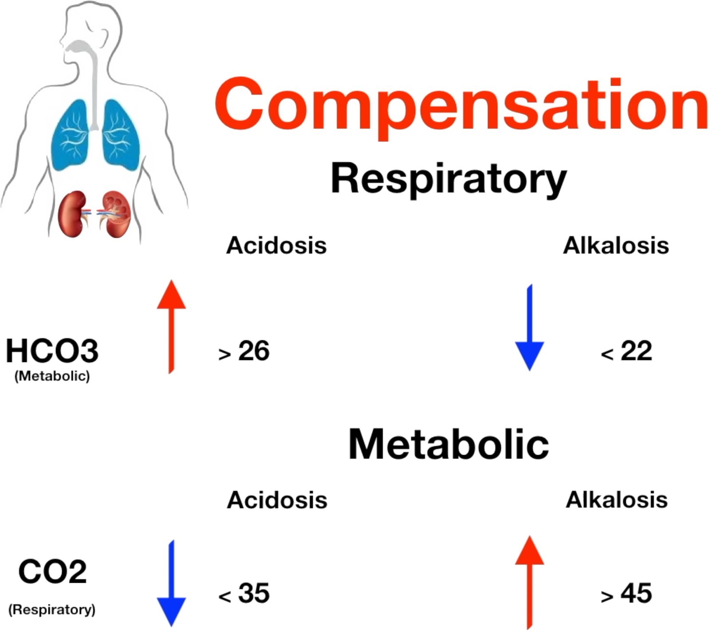

Armenian College of Nursing & Health Sciences
Yerevan · Armenia · NCLEX‑RN Study Notes
Lungs regulate CO₂ (respiratory). Kidneys regulate HCO₃ (metabolic). ROME mnemonic guides ABG interpretation.
| Parameter | Normal Range | What It Measures | Controlled By |
|---|---|---|---|
| pH | 7.35 – 7.45 | Acidity/alkalinity of blood | Lungs + Kidneys |
| PaCO₂ | 35 – 45 mmHg | Carbon dioxide (acid) in blood | Lungs |
| HCO₃⁻ | 22 – 26 mEq/L | Bicarbonate (base) in blood | Kidneys |
| PaO₂ | 80 – 100 mmHg | Oxygen in arterial blood | Lungs |
| O₂ Sat | ≥ 95% | Hemoglobin saturation with oxygen | Lungs/Hemoglobin |
Cause: CO₂ retention / hypoventilation
S/S: Confusion, drowsiness, shallow breathing, ↓ BP
Tx: Improve ventilation, treat cause, bronchodilators
Cause: CO₂ blown off / hyperventilation
S/S: Dizziness, tingling in fingers/lips, rapid breathing, muscle cramps
Tx: Treat underlying cause, calm breathing, rebreathing techniques

| Primary Disorder | Compensating System | Compensation Change | Threshold |
|---|---|---|---|
| Respiratory Acidosis | Kidneys (Metabolic) | Retain HCO₃⁻ ↑ | HCO₃ >26 mEq/L |
| Respiratory Alkalosis | Kidneys (Metabolic) | Excrete HCO₃⁻ ↓ | HCO₃ <22 mEq/L |
| Metabolic Acidosis | Lungs (Respiratory) | Blow off CO₂ ↓ | CO₂ <35 mmHg |
| Metabolic Alkalosis | Lungs (Respiratory) | Retain CO₂ ↑ | CO₂ >45 mmHg |